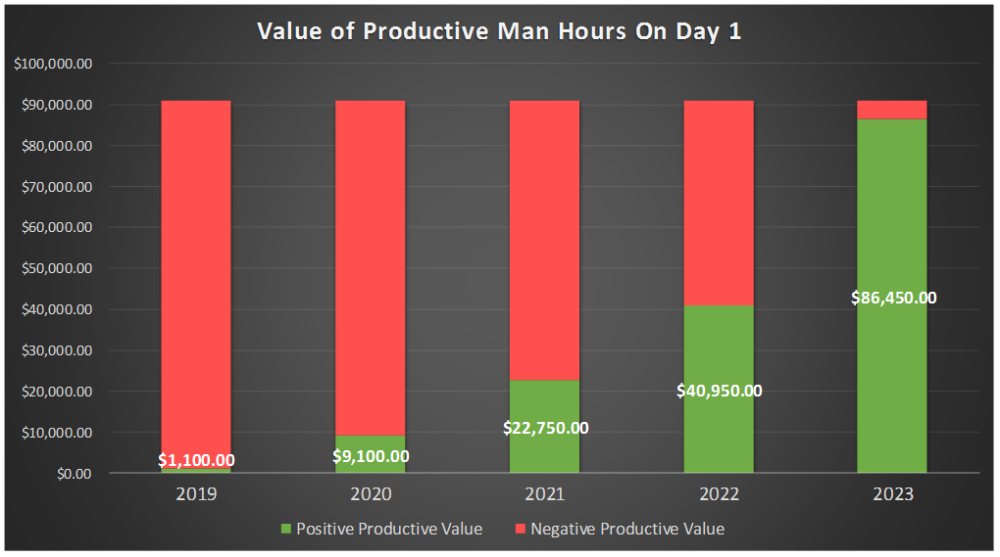

Background
Interns currently are not able to perform to their maximum potential for at least 1/3 of their internship due to lack of access. Not only does this issue affect interns, but also full time employees and contract workers. Our team's goal is to streamline the on-boarding process by ensuring that all pertinent access information is requested from the hiring manager from the very start of the hiring request. This will allow requests to be submitted to IT prior to the employee's arrival.
Process
After a series of meetings with key stakeholders including Staffing Coordinators, Governance and Provisioning, Talent Acquisition, and HR, I developed a prototype (pictured right) form which captured 3 key data points that we identified to be pain points from previous years. These three data points, "Model After", "Required Access/Software", and "Engineering Role", were determined to be vital to the expedition of employees receiving all necessary access. We communicated these key aspects with our stakeholders and explained why they needed to be utilized in the future.
In the end, these data points were utilized by Staffing Coordinators in the request form (pictured below) they send to hiring managers.
Results/Benefits
This process will be piloted for the 2020 intern year and if successful, will be utilized for full time SCE employees and contractors. By achieving our goal, we are able to boost productivity man hours and interns are able to utilize the full potential of their time at SCE. We forecast that our proposed improvements will result in 95% on-boarding accuracy by 2023 (pictured below).
Our final proposed process flow:

Future Enhancements
Following the SCE value of Continuous Improvement, we also developed several future enhancements for the on-boarding process:
- Utilizing Pega Automation to capture an employee's access in SAP before off-boarding
- Transitioning to a web-based form rather than Excel spreadsheets
- Incorporating feedback questions regarding access on the intern off-boarding form to gauge access performance for that year
- Developing general role mapping templates for ALL positions to prevent an employee starting with no access